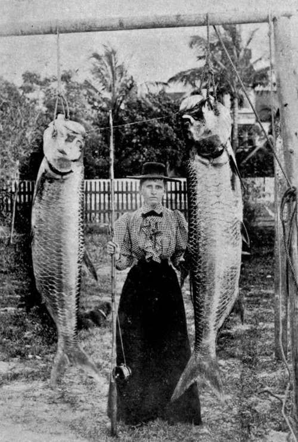

Tarpon Fishing In The Gulf Of Mexico. Part 2
Description
This section is from the book "Sea Fishing", by John Bickerdyke. Also available from Amazon: Sea Fishing.
Tarpon Fishing In The Gulf Of Mexico. Part 2
He has kindly furnished me with some notes of his experiences during his visit in 1894. He says, after remarking that few tarpon fishers agree as to the details of the sport, and that every man has his own theory on the subject :
Our first attempts at tarpon fishing were at Punta Gorda, but we had no luck, and I do not think well of the place from an angling point of view. About the middle of April we went to Fort Myers, and there my wife and I killed seventeen fish, my best 183 lbs., smallest 75 lbs. I have presented one weighing 150 lbs. to the Norwich Museum, and am keeping my 183-pounder and Lady Orford's 106-pounder. There can be no doubt in my opinion that the tarpon, as a fish, is quite as game as the salmon.
Of course there is not the pretty scenery, the casting, and the same amount of knowledge of where fish are to be found that makes salmon angling so delightful. Nevertheless, tarpon fishing is a magnificent sport, and I wonder that more Englishmen do not take to it.
AN ANGLER AND HER CATCH.
My largest fish took one hour and forty-five minutes to kill. It should not be forgotten that they are heavily handicapped by being hooked so near a vital part, and, as every tarpon man will know, they bleed very much. As to the well-known leaping of the tarpon, I have counted over twenty distinct jumps of some feet in the air. Occasionally one meets a fish that is sulky and continually coming to the surface of the water to ' blow,' as it is called ; but as a rule their activity is marvellous. I shall not readily forget one particular fish. It leaped right over our boat.
Two hundred yards of line is none too much on a reel, for I have had a fish take the full six hundred feet without stopping, and then break me.
One has many slips when tarpon fishing, and it should never be forgotten that the slightest check is fatal to one's chance of killing. One of my fish (it had only fouled the trace by getting it under his scissor jaw) took three hours to kill.
As to whether the fish can be taken with fly or trolling—a much-debated point—it should not be forgotten that the fully-grown tarpon has a very hard mouth, too hard for penetration by hook. An American in a small yacht tried trolling, but though they took the spinner the fish always broke away. I think something might be invented that would hold them. They would be very difficult to kill in this fashion.
The time of year is a most important matter. The hotter it is, the better the fishing becomes. I cannot think that it would be good after the second week in May, as the tarpon are then going up to spawn, and though they take readily, according to accounts I heard, have lost their gameness.
Apropos of Lord Orford's comparison of tarpon with salmon angling, it will no doubt adversely prejudice those who have never killed a tarpon to learn that the sport is partly fishing with a dead gorge bait. Up to the present no other means have been devised of killing Master Tarpon when he gets large. When small, a fly or phantom minnow is effective. When large he is so sly and cunning that he is rarely ever to be tempted by this means. And yet, despite the dead gorge, tarpon fishing requires as much skill of its own kind as any branch of sport with which I am acquainted, as is proved by the fact that expert anglers have failed to kill for the whole of their first season.
There is another reason why tarpon cannot be killed when hooked in the mouth. In its way, though from an entirely different cause, the mouth of the tarpon is more difficult than that of the grayling, as Lord Orford has pointed out ; and it is for this reason that the old tarpon fishers, though they slaved away for years, were never able to kill. Up till March 1885 no large tarpon had ever been captured with rod and reel, but in that year an American gentleman, Mr. Wood, of New York City, was successful in bringing to gaff a fish weighing considerably over 100 lbs.
Among my angling treasures is a scale from this very tarpon, presented to me by Mr. A. N. Cheney.
To recount my own experiences in Florida. We left Liverpool one Wednesday afternoon, and were in New York on the following Tuesday night ; and, though we made the passage in midwinter, the 10,000-ton Teutonic, most comfortable of floating hotels, enabled us to cross the Atlantic with but little physical agitation. Were I going again, as I hope to do, I would as soon cross in winter as at midsummer.
Early next day I replenished my store of tarpon literature, and purchased my tackle.
There are still those in England, and in the United States also, who hardly believe that it is possible to kill with very frail tackle a 200-lb. fish—a fish so strong that it can tow a boat for miles ; so active that it can leap out of the water from four to seven feet over and over again ; so fierce that, once hooked, it regards its captor as a personal enemy, and fights him with courage and activity not given to any other fish. The finest gut cast with which a four-pound trout can be captured is very coarse by comparison with (fish for fish, weight for weight) a tarpon line.
At Conroys, 310 Broadway, New York City, I spent 10 l. and a very pleasant couple of hours discussing the gear and chances of sport. For my rod I paid 24 s., for my reel 6 l., and the rest of the money went on hooks and lines.
Take several rods, lines, and plenty of hooks. Tarpon fishing is such a new sport that all its tackle is in process of evolution. The kind of rod in vogue at the time of writing (1895) is some seven feet long, made in one piece, the butt bound like the handle of a cricket bat. Some men use jointed rods, an abomination from my point of view in a sport where the strain is often such as to tire the strongest man. When I fit out again, I shall not forget the wholesale breaking of reels, lines, and hooks that I witnessed during my first campaign.
Continue to:
- prev: Chapter XV. Tarpon Fishing In The Gulf Of Mexico
- Table of Contents
- next: Tarpon Fishing In The Gulf Of Mexico. Part 3
Tags
fishing, hooks, bait, fishermen, spanish mackerel, mackerel fishing